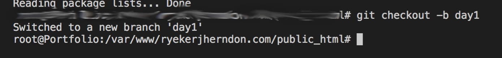

I'm glad you asked! Git is a program that you download for your computer to use. It's one and only job is to keep track of folders and files that you tell it to track. Once you learn how to use it properly, Git will ensure that you never lose code to hardware failures, accidental deletion, or any other unfortunate mishaps. After all, Git happens!
Another excellent question! Github (or more correctly: github.com) is a website that offers free services to software developers. Using Git (the program on your computer) you can access free cloud-based storage for your code, get free web hosting, and keep infinite versions of your code, safely stored on someone else's dime. Pretty Sweet!
In the Javascript for Beginners course, we emphasize using Git and Github because as a developer, you'll be using some form of version control, guaranteed. Below I have outlined all of the things you'll need to know about git and github to begin day 1 of Intro to Javascript. Read each of the articles below and our summary of how you'll use them.
Branches are a huge asset to us as Front End Developers. Essentially, a branch is a copy of your code that you can edit without changing the original version of the code. In our class, we will have 1 repository that we use for the duration of the class. Each day at the beginning of class, we will create a new branch for that day's lessons. That way, you can maintain a "clean" copy of your code base (the starting point with no code written) and create a new branch for the different lessons (where you can write subject-specific notes.) The commands we will issue in our terminal in class each day to create our new branch are:
cd path/to/your/class/folder
git checkout -b day-of-class
It should return a message similar to this
Pull requests are how we re-unify (or merge) our branches back together. So once you're done with your take home practice excersizes, you can merge the branch into your gh-pages branch so your instructor can test the functionality of the code in real time. Read up on gh-pages branches below if you don't know what they are or what they do.
Have you ever built a website and wanted to show it off but didn't want to pay for web hosting? Lucky for you, github.com offers free web hosting! You can't pick the name of your website, but if you just want to show off your skills or show a client your progress on their website without paying a hosting company, this is your best bet. As far as how we're going to use the gh-pages branch, it will be for testing your take home code. Each night after class, you will create a new branch for your take home excersize, create the program for that class, and test it to make sure it works. Once you're satisfied with it, you will create a Pull Request on github.com with your take home branch as the compare and your gh-pages branch as the base. That way, your instructor can test your work as well as look over the code itself.
While we never want merge conflicts to happen, they sometimes do. Because of this, you should read up on what they are and how to resolve them.
Git branches are a huge asset to us as Front End Developers. Essentially, a branch is a copy of your code that you can edit without changing the original version of the code. In our class, we will have 1 repository that we use for the duration of the class. Each day at the beginning of class, we will create a new branch for that day's lessons. That way, you can maintain a "clean" copy of your code base (the starting point with no code written) and create a new branch for the different lessons (where you can write subject-specific notes.) The commands we will issue in our terminal in class each day to create our new branch are:
cd path/to/your/class/folder
git checkout -b day-of-class
It should return a message similar to this
Pull requests are how we re-unify (or merge) our branches back together. So once you're done with your take home practice excersizes, you can merge the branch into your gh-pages branch so your instructor can test the functionality of the code in real time. Read up on gh-pages branches below if you don't know what they are or what they do.
Have you ever built a website and wanted to show it off but didn't want to pay for web hosting? Lucky for you, github.com offers free web hosting! You can't pick the name of your website, but if you just want to show off your skills or show a client your progress on their website without paying a hosting company, this is your best bet. As far as how we're going to use the gh-pages branch, it will be for testing your take home code. Each night after class, you will create a new branch for your take home excersize, create the program for that class, and test it to make sure it works. Once you're satisfied with it, you will create a Pull Request on github.com with your take home branch as the compare and your gh-pages branch as the base. That way, your instructor can test your work as well as look over the code itself.
While we never want merge conflicts to happen, they sometimes do. Because of this, you should read up on what they are and how to resolve them.